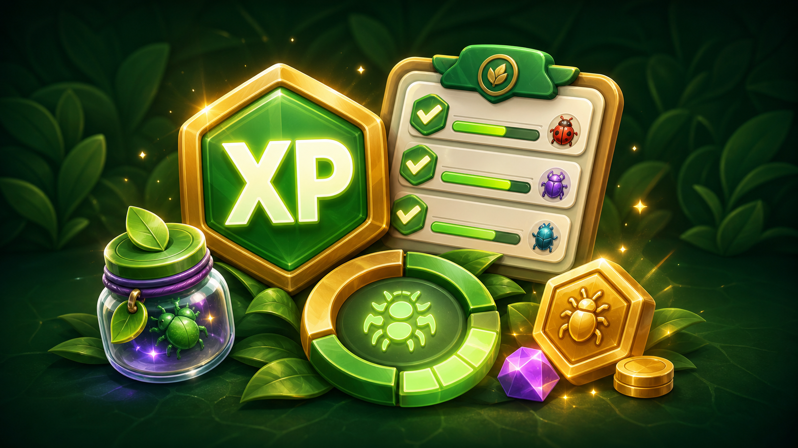
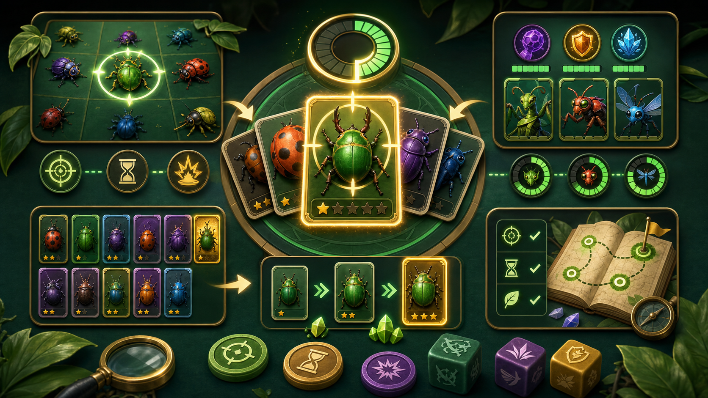

Bugs melden en volgen
Gebruik Bugs om meldingen aan te maken, status te volgen, comments te plaatsen en upvotes te geven.
Game guide voor spelers die alles willen snappen
Korte uitleg per onderdeel: waar je iets vindt, wat je doet en welke regels belangrijk zijn.


Kies een onderwerp. De koppen links zijn hoofdgroepen; de links eronder openen de uitleg.
Melden, status en rewards.
Signals, bewegen en lamp.
Eerlijke score-run met seed.

Waves, bosses en rewards.

Drie actieve helperbugs.

Targets, timing en powerups.

Unlocks, rarity en duplicates.

 Epic 4.9%
Epic 4.9%
Kansen per rewardbron.
Trades en hogere rarity.

XP, weekdoelen en boost.
Geen resultaat. Probeer duel, drop, upgrade, lamp of XP.
BugBaas draait om bugs opvolgen en spelprogressie verdienen. Begin hier als je snel wilt weten waar alles staat.
Gebruik Bugs om meldingen aan te maken, status te volgen, comments te plaatsen en upvotes te geven.
Gebruik Arena voor duels en Solo Campaign. Je verdient XP, boss rewards en soms BugDex unlocks zonder dat spamacties de beste route worden.
Gebruik BugDex en Workshop om unlocks te bekijken, duplicates te ruilen en upgrades te maken. Actieve helperbugs blijven beschermd.
| Als je wilt... | Ga naar | Wat je daar doet |
|---|---|---|
| Een probleem vastleggen | Bugs | Nieuwe bug melden, prioriteit inschatten en updates plaatsen. |
| Dagelijkse progressie halen | Home | Daily login claimen, radar gebruiken en movement volgen. |
| Je score verbeteren | Arena | Duels spelen, campaign oefenen en je Bug Squad testen. |
| Je collectie beheren | BugDex | Unlocks bekijken, helpers kiezen, ruilen en upgraden. |
| Je weekdoelen checken | Rank | XP, weekly missions en beloningen volgen. |
BugDex is je collectie. Bekijk wat je hebt, wat duplicate is en welke bugs goed zijn als helper of upgrade-materiaal.
Snel te vangen en vooral nuttig als upgrade-materiaal.
Betere score en vaak de eerste goede helper-keuze.
Kost meer taps, maar helpt duidelijk in Arena en Campaign.
Sterk als helper en nodig voor de route naar Mythisch.
Komt alleen uit upgrades en heeft unieke helper-specials.
| Rarity | Taps in Duel | Score | Hitbox | Opmerking |
|---|---|---|---|---|
| Gewoon | 2 | 1 | 1.00x | Snel pakken, lage waarde. |
| Zeldzaam | 3 | 2 | 1.05x | Vaak betere keuze dan meerdere gewone bugs. |
| Episch | 5 | 4 | 1.10x | Goede score, maar kost tijd. |
| Legendarisch | 7 | 6 | 1.14x | Sterk target als je helpers/timing goed zijn. |
| Mythisch | 9 | 9 | 1.18x | Hoogste waarde en unieke helper-specials. |
Mythische bugs zijn bedoeld als einddoel. Je krijgt ze niet uit normale random rewards; upgrade 10 verschillende Legendarische bugs naar Mythisch.
Elke rewardbron rolt eerst of je een BugDex drop krijgt. Daarna kiest de app rarity; Mythisch komt alleen via upgrades.
Geeft alleen gewone bugs. Goed voor voorraad, niet voor hoge rarity.
Beste normale bron voor drops met kans op rare, epic en legendary.
Altijd een roll, maar de unlock verschijnt pas als foreground catch.
Extra bonus na alle drie weekmissies; rare en epic blijven gecapt.
Gebruik duplicates om hogere rarity te maken. Dit is de Mythisch-route.
Duel- en movement rewards wachten tot je de foreground bug aantikt.
| Bron | Drop kans | Gewoon | Zeldzaam | Episch | Legendarisch | Mythisch |
|---|---|---|---|---|---|---|
| Daily login | 35% | 100% | 0% | 0% | 0% | 0% |
| Bug melden | 58% | 70% | 24% | 4.8% | 1.2% | 0% |
| Comment | 24% | 73% | 23.4% | 3.5% | 0.1% | 0% |
| Status update | 22% | 71% | 24% | 4.5% | 0.5% | 0% |
| Bug gefixt | 45% | 68% | 24% | 4.8% | 3.2% | 0% |
| Upvote gegeven | 18% | 75.2% | 24.5% | 0.3% | 0% | 0% |
| Profiel bekijken | 8% | 88% | 12% | 0% | 0% | 0% |
| Foreground bug smash | 35% | 70% | 24.4% | 4.9% | 0.7% | 0% |
| Weekly all-3 bonus | 100% | 72% | 24% | 3.5% | 0.5% | 0% |
| Duel win reward | 100% | 71% | 24% | 4.5% | 0.5% | 0% |
| Solo boss 2 | 100% | 100% | 0% | 0% | 0% | 0% |
| Solo boss 4 | 100% | 75% | 24% | 1% | 0% | 0% |
| Upgrade | 100% | 0% | route | route | route | route |
Weekly all-3 claim je pas na alle drie weekmissies. Duel- en movement rewards wachten als foreground catch, zodat je altijd ziet wat je vangt.
In Arena daag je iemand uit voor een korte score-run. Beide spelers krijgen dezelfde bugvolgorde; target-keuze en timing maken het verschil.
Open Arena en kies Duel. De uitdager speelt direct; de tegenstander speelt later dezelfde seed.
Je hebt 30 seconden en 56 targets. Hogere rarity geeft meer punten, maar vraagt meer taps en betere timing.
Win geeft 10 XP, verlies 5 XP. Een dagelijkse duel-reward telt maar 1x per tegenstander en BugDex wins verschijnen eerst als foreground catch.
| Mechanic | Wat gebeurt er | Waarom belangrijk |
|---|---|---|
| Combo bonus | Elke reeks catches kan extra punten geven, afhankelijk van squad. | Snel en netjes tappen wordt beloond. |
| Support bonus | Support helpers geven eindbonus op basis van score. | Maakt consistent spelen sterker. |
| Movement bonus | Movement helpers kunnen tot 3 eindpunten geven als je genoeg scoort. | Nuttig voor net-wel/net-niet duels. |
| Arena badge | Telt alleen inkomende duelacties. | Uitgaande wachtduels geven geen onterechte badge. |
| Retry onder 30 | Lage of bugged eigen score kan opnieuw zolang de ander nog niet speelde. | Voorkomt verloren duels door een slechte submit. |
| Win BugDex reward | De reward wordt eerst als foreground bug klaargezet. | Je ziet altijd wat je vangt en krijgt geen stille unlock. |
Solo Campaign staat in Arena. Je oefent waves tegen BugBot en claimt dagelijkse boss rewards.
| Level | Wave 1 | Wave 2 | Wave 3 | Boss |
|---|---|---|---|---|
| 1 | 54 | 64 | 74 | 84 |
| 2 | 66 | 78 | 90 | 104 |
| 3 | 80 | 94 | 108 | 126 |
| 4 | 94 | 108 | 124 | 144 |
| 5 | 150 | 164 | 180 | 198 |


Kies maximaal 3 actieve helperbugs. Ze helpen automatisch in Duel en Campaign, maar timing en target-keuze blijven belangrijk.
Actieve helperbugs blijven beschermd voor trade en upgrade.
Hogere rarity geeft meer hits, kortere cooldown en betere control.
Combineer damage, slow en shield zodat je niet van een type afhankelijk bent.
Mythische helpers geven een unieke rol, geen automatische win.
 Zap
Zap Sticky
Sticky AOE
AOE Shield
Shield Burst
Burst Freeze
Freeze| Helper type | Effect | Typisch sterk tegen |
|---|---|---|
| Zap | Snelle hits op een belangrijke of zeldzame target. | Rare, Epic en Legendary targets. |
| Sticky | Plakt/vertraagt een target kort en doet extra hits als hij veel taps nodig heeft. | Zware targets die bijna ontsnappen. |
| AOE | Raakt doelwit plus nearby bugs; hogere rarity kan meer splash targets raken. | Groepjes gewone/zeldzame bugs. |
| Shield | Helpt op late targets en geeft guard/slow als ze ver op het scherm zijn. | Targets die bijna weg zijn. |
| Burst | Betrouwbare directe hit; tier-voordeel kan extra helpen. | Algemene cleanup. |
| Helper rarity | Base hits | Cooldown | Control bonus |
|---|---|---|---|
| Gewoon | 1 | 9.4s | 0ms |
| Zeldzaam | 2 | 7.9s | 220ms |
| Episch | 3 | 6.5s | 420ms |
| Legendarisch | 4 | 5.2s | 620ms |
| Mythisch | 5 | 4.3s | 820ms |
Mythische helpers hebben een eigen rol: control, chain hits, finish damage of emergency defense. Lees per kaart wat hij doet, wanneer hij sterk is en wat de balans houdt.

Royal Freeze
Bevriest het gekozen target en nabije bugs kort. Beste gebruik: drukke boss waves waarin je even controle nodig hebt.
Prism Chain
Ketst lichte hits door naar bugs dichtbij. Beste gebruik: groepjes Zeldzaam/Episch waar losse taps net te traag zijn.

Pattern Break
Doet bonus damage op Episch+ targets. Beste gebruik: dure targets die anders te veel taps kosten voor hun score.

Candy Slow
Vertraagt een klein groepje bugs. Beste gebruik: targets die bijna uit beeld lopen terwijl je combo wilt vasthouden.

Longneck Scout
Scant naar hoge-rarity targets en geeft daar extra hits op. Beste gebruik: Legendarisch/Mythisch targets vroeg kiezen.

Bloom Blade
Finisht sterke of bijna kapotte bugs met extra slash damage. Beste gebruik: geen taps verspillen op laatste hit.

Lantern Signal
Markeert gevaarlijke targets en chain-hit extra bugs. Beste gebruik: snel bepalen welke bug nu de meeste waarde heeft.

Mirror Guard
Vangt late ontsnappers op met shield damage en korte freeze. Beste gebruik: score redden aan het einde van een wave.
| Special | Rol | Waar sterk | Bewuste beperking |
|---|---|---|---|
| Royal Freeze | Control | Drukke boss waves | Koopt tijd, geen grote damage. |
| Prism Chain | AOE/chain | Clusters met meerdere targets | Zwakt af bij losse bugs. |
| Pattern Break | Anti-rarity | Episch+ targets | Weinig waarde op gewone bugs. |
| Candy Slow | Slow | Snelle targets vlak voor ontsnappen | Vertraagt, maar killt niet vanzelf. |
| Longneck Scout | Target focus | Zware targets tussen lage spawns | Afhankelijk van goede target-keuze. |
| Bloom Blade | Finisher | Bijna-dode sterke bugs | Heeft eerst damage nodig. |
| Lantern Signal | Mark/priority | Drukke duels met veel keuzes | Kleine hulp, geen auto-clear. |
| Mirror Guard | Emergency defense | Laatste seconden | Redt alleen beperkte missers. |
Home bundelt dagelijkse progressie: login claim, movement, radar-widget en tijdelijke boosts.
Geeft maximaal 3 signals per dag. Een signal kan XP en een BugDex roll geven; verwacht vooral gewone en zeldzame bugs.

Elke 5e daily login geeft een lamp. Na activeren werkt hij 24 uur: movement doelen halveren en rarity krijgt een kleine boost.
Lopen, hardlopen en fietsen worden apart verwerkt, zodat je movement-doelen betrouwbaarder meetellen.
Rank laat voortgang, XP en weekly missions zien. Weekdoelen leveren de duidelijkste progressie op.
| Actie | XP |
|---|---|
| Daily login claim | 5 |
| Duel winnen | 10 |
| Duel verliezen | 5 |
| Movement radar bug | 3 |
| Weekly mission XP | 20-25 |
| Weekly all-3 bonus | 10 + BugDex |
| Foreground catch Gewoon/Zeldzaam/Episch/Legendarisch/Mythisch | 1 / 3 / 6 / 10 / 15 |
Nieuwe of lage-XP spelers onder 80 XP krijgen 3 dagen lang 2x positieve XP en een extra onafhankelijke BugDex roll. De extra roll geeft niet twee keer dezelfde BugDex unlock in dezelfde catch-flow.
Elke week krijg je drie doelen, waaronder movement. Rewards zijn vooraf zichtbaar, zodat je weet of je speelt voor XP, een gewone BugDex roll of een betere zeldzame roll.
De Workshop staat in BugDex. Duplicates krijgen waarde: ruil ze of combineer ze naar hogere rarity.
Selecteer wat jij aanbiedt en wat je terug wilt. Open trades tonen duidelijk welke kant van de ruil van wie is.
Combineer bugs naar hogere rarity. Mythisch is alleen via upgrade bereikbaar en vraagt 10 verschillende Legendarische bugs.
Een bug die in je actieve squad zit wordt beschermd. Heb je een extra copy, dan blijft die wel bruikbaar voor trade of upgrade.
Open trades tonen duidelijk wat zij bieden en wat zij van jou willen. De badge telt alleen inkomende open ruilverzoeken.
| Ruil onderdeel | Wat je ziet | Waarom dit helpt |
|---|---|---|
| Inkomend verzoek | Zij bieden en zij willen van jou staan apart. | Telt mee voor de BugDex-badge zolang het verzoek open is. |
| Uitgaand verzoek | Jij biedt en jij vraagt staan apart. | Je ziet sneller of je request klopt voordat iemand accepteert. |
| Historie | Laatste afgeronde, afgewezen en geannuleerde trades. | Handig om terug te zien wat er met een verzoek is gebeurd. |
| Sortering | Mythisch, Legendarisch, Episch, Zeldzaam en daarna Gewoon. | Hogere waarde bugs staan bovenaan bij selecteren. |
| Upgrade route | Nodig van vorige tier | Resultaat |
|---|---|---|
| Gewoon naar Zeldzaam | 3 verschillende Gewoon | 1 willekeurige Zeldzame bug |
| Zeldzaam naar Episch | 3 verschillende Zeldzaam | 1 willekeurige Epische bug |
| Episch naar Legendarisch | 3 verschillende Episch | 1 willekeurige Legendarische bug |
| Legendarisch naar Mythisch | 10 verschillende Legendarisch | 1 willekeurige Mythische bug |
Win battles door te kiezen. Pak niet alles: kijk naar score, resterende tijd en helper-cooldowns.

Pak Zeldzaam en Episch vaak eerder dan lang doorbijten op Legendary. Zap, Sticky en Shield maken een target soms net haalbaar.
Bewaar powerups voor boss waves of late waves. Tijdens het boss window is break bonus meestal meer waard dan losse targets.
Weekly all-3 en bug fixed zijn sterke bronnen. Mythisch komt uit upgrades, dus duplicates zijn trade- en upgrade-materiaal.